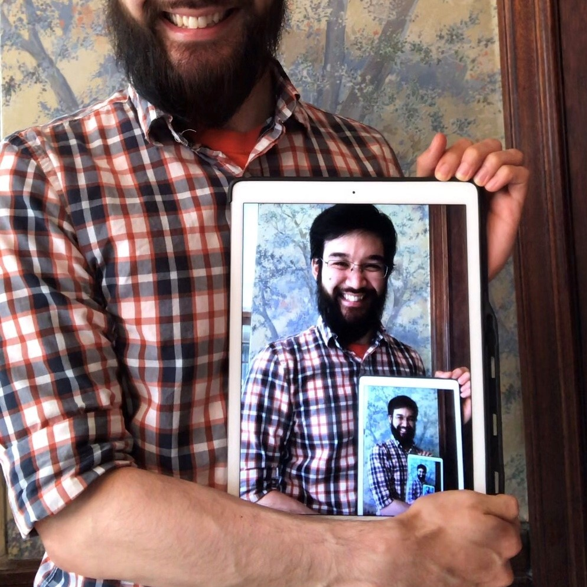

Budding software engineer, computer scientist in training, and amateur mathematician.
Currently completing degree course of study.
Presently seeking full-time internships for Summer 2023.
for full resume or other inquiries,
wsmarshall(at)pm(dot)me
San Francisco State University, summa cum laude (projected)
January 2024 graduation (expected)
Instructor Student Assistant (e.g., TA) for: